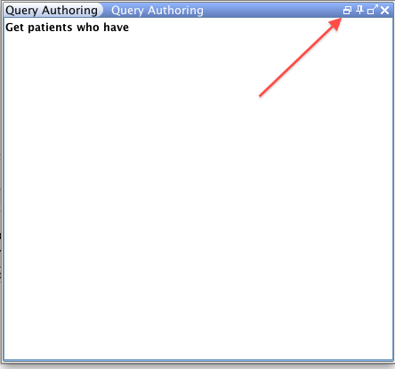

SNOMED CT, Java and MySQL are registered trademarks
Docked Panels or Dockable Panels are a feature of modern application user interfaces. Docked Panels typically contain a semi-automous component of the user interface that can be dragged to different positions of the user interface.
This allows the user to:
- Change the layout of the application interface to suit their needs.
- Hide,close or maximise an interface component to use the real estate on the interface more efficiently.
- Operate the component in a Floating mode which allows the component to be displayed in a window separate from the main application window.
Snofyre incorporates 'Docked Panels' in its user
interface. For example, the Query Authoring Panel (shown below) in Snofyre can be minimised,
maximised, pinned or floated using the various buttons in the title bar. The functions
of the buttons on the title bar are displayed when the mouse is hovered over the icons.
For example, you can float the panel by clicking on the icon as shown below.


